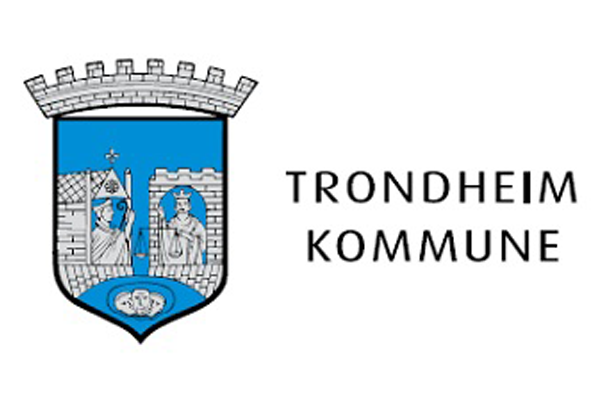

This overview is based on this XML output of the GLAMorous tool d.d. 01-03-2024.
It was generated using the GLAMorousToHTML code.
Also see the documentation of this tool.
This data is also available as an Excel file. More structured data formats (csv, json) will be added in the future.
Available languages
Nynorsk (693)
English (224)
Nynorsk (109)
German (102)
Swedish (71)
Egyptian Arabic (53)
French (51)
Danish (43)
Russian (42)
Finnish (27)
Italian (24)
Polish (24)
Welsh (24)
Czech (20)
Dutch (19)
Spanish (19)
Arabic (17)
Persian (17)
Portuguese (17)
Catalan (16)
Japanese (15)
Ukrainian (13)
Romanian (8)
South Azerbaijani (8)
Hungarian (7)
Hebrew (6)
Bulgarian (5)
Chinese (5)
Eastern Armenian (5)
Slovene (5)
Korean (4)
Standard Estonian (4)
Galician (3)
Greek (3)
Macedonian (3)
Malagasy (3)
Turkish (3)
Azerbaijani (2)
Cebuano (2)
Hausa (2)
Icelandic (2)
Indonesian (2)
Latvian (2)
Thai (2)
Vietnamese (2)
Afrikaans (1)
Albanian (1)
Basque (1)
Belarusian (1)
Bosnian (1)
Georgian (1)
Lithuanian (1)
Luxembourgish (1)
Malayalam (1)
Minnan (1)
Moksha (1)
Santali (1)
Serbian (1)
Slovak (1)
Swahili (1)
Waray (1)
Nynorsk (693)
17._mai_(grunnlovsdag) |
1733_i_Danmark |
Abraham_Bredahl_Rosenvinge |
Adelsveita |
Aimar_Sørenssen_(viseadmiral) |
Alf_Schrøder |
Alfred_Larsens_gate |
Allround-VM_på_skøyter_1907,_menn |
Allround-VM_på_skøyter_1911,_menn |
Alpelue |
Andreas_Berg_(1861–1944) |
Andreas_Moe |
Andresen_(slekt_fra_Schleswig-Holstein) |
Angell_(slekt) |
Antonie_Løchen |
Apotekerveita |
Aprilsnarr |
Arbeideren |
Archidiakoni_plass |
Arkeologiåret_1815 |
Arne_Dybfest |
Arne_Fjellbu |
Asylbakken |
Asylveita |
Austråttborgen |
Bakeriet |
Bakkaunet |
Bakke_gård |
Bakke_kirke_(Trondheim) |
Bakkegata_(Trondheim) |
Bakklandet |
Bang_(slekt) |
Batterigata_(Trondheim) |
Batteriveita |
Benjamin_Dass |
Bergen_lærerhøgskole |
Bersvendveita |
Biskop_Darres_gate |
Biskop_Gunnerus’_gård |
Bispehaugen_Ungdomskorps |
Bjørnulf |
Blendingsgardin |
Blokkfløyte |
Blussuvoll |
Blussuvoll_skole |
Bodin_kirke |
Bombingen_av_Nyhavna |
Brandhaugveita_(Trondheim) |
Bratsberg_kirke |
Brattørgata |
Brattørparken |
Brattørveita |
Breierveita |
Broch_(slekt) |
Brodals_gate |
Bromstad |
Brubakken_(Trondheim) |
Brudekrone |
Brøsetvegen |
By |
Bybrann |
Bybrannen_i_Trondheim_1841 |
Bybrannen_i_Trondheim_1842 |
Bybranner_i_Trondheim |
Byløkke |
Byneset_kirke |
Bynesveien |
Bøgh |
Cappelen |
Carl_Adolf_Dahl |
Carl_Arnoldus_Müller_(1818–1893) |
Castberg |
Charles_III_av_Storbritannia |
Charlottenlund_stoppested |
Christen_Christensen_(kunstløper) |
Christian_Martin_Monsen |
Christian_Thaulow_(1864-1930) |
Christopher_Nielssen_Tønder |
Cicignons_plass |
Cissi_Kleins_gate |
Coldevin |
Credoveita |
DS_«Ariadne» |
DS_«Hera» |
DS_«Jupiter»_(1856) |
DS_«Mira» |
DS_«Orkla»_(1869) |
DS_«Saltdal» |
Dagsposten |
Dalgård |
Danielsbakerveita |
Danielsveita |
De_syv_dødssynder |
Den_Nordenfjeldske_Kreditbank |
Den_midlertidige_kirkeledelse |
Det_Kongelige_Norske_Videnskabers_Selskab |
Det_Nordenfjeldske_Dampskibsselskab |
Det_Nordlandske_Dampskibsselskab |
Det_Norske_Baptistsamfunn |
Det_europeiske_naturvernåret_1970 |
Det_gode_samvitet |
Devle_gård |
Dimisjon |
Dombjelle |
Domkirkegården |
Drillveita |
Dronning_Mauds_Minne_Høgskole_for_barnehagelærerutdanning |
E.C._Dahls_bryggeri |
E.C._Dahls_gate |
E.C._Dahls_park |
Eberg |
Eddie_Murphy_(skøyteløper) |
Eddie_Tolan |
Edel |
Edel_Randem |
Edvard_Os |
Egebergs_Ærespris |
Einar_Gram |
Einar_Gundersen |
Eino_Purje |
Eirik_Jarls_gate_(Trondheim) |
Ekserserhuset |
Elektrisitetsforsyningskommisjonen_av_1919 |
Elgeseter_bru |
Elgeseter_gård |
Eli_plass |
Elias_Nægler |
Elvegata_(Trondheim) |
Energi_i_Norge |
Enkeltskillingsveitene |
Erling_Amundsen |
Erling_Lindboe |
Erling_Thronæs |
Erling_Østerberg |
Fagerheim_allé |
Faktura |
Falck_Redning |
Falstad_fangeleir |
Fantoft_Studentboliger |
Fergesambandet_Skansen–Vanvikan |
Fergesambandet_Storoddan–Sunde–Hemnskjel–Sandstad |
Ferje |
Filipstad-ulykken |
Fiskekaker |
Fiskernes_Bank |
Fjellsetra_(Trondheim) |
Fjordferge |
Fløttmann |
Fogd |
Foldereid_kirke |
Folkeskole |
Forlaget_Oktober |
Forlis |
Fotballklubben_Bodø/Glimt |
Fotografi |
Fotveita_(Trondheim) |
Framhaldsskole |
Frederik_Hilfling-Rasmussen |
Frederik_Trampe |
Fredkulla |
Fredrik_Georg_Lerche |
Fredrik_Vogt |
Frigg_Oslo_Fotballklubb |
Friidrett_under_Sommer-OL_1928_–_Spydkast_menn |
Frølich_(slekt) |
Fylkesvei_5627 |
Gaubekveita |
Geografi_og_Kærlighed |
Georg_Christian_von_Schultz |
Gerhard_Flesch |
Gjelvangveita |
Gjemsøveita |
Gjengangeren |
Gjetveita |
Gløshaugen |
Gram_(slekt) |
Grand_Hotel_(Molde) |
Gregus_gate |
Greve,_Greve,_Greve_&_Lorentzen |
Greve_(slekt) |
Grong_(tettsted) |
Gråkallbanen |
Gudruns_gate |
Gunnar_Garbo |
Gunnar_Sætersdal |
Halsa_kirke_(Halsa) |
Hammond_(slekt) |
Handelspatrisiatet_i_Søgaden |
Hans_Carl_Knudtzon |
Hans_Christian_Christiansen_Hagerup |
Hans_Hagerup_Krag |
Hans_Lemvig_Christiansen |
Hans_Peter_Jenssen_(1797–1868) |
Hans_Reidar_Holtermann |
Hans_Severin_Fürst_(1782) |
Hans_Ulrich_Mølmann |
Hanskemakerbakken |
Harald_Langhelle |
Harmonien_(bygning) |
Havstein_gård |
Heimferd |
Helgelands_fogderi |
Helle_Ottesen |
Helmer_Lundgreen |
Helmer_Lundgreens_gate |
Henry_Gleditsch |
Herman_Løchen |
Herman_Semmelmann |
Hilmar_Meincke_Krohg |
Hirsch_Komissar |
Hjelpekrysseren_«Berlin» |
Hjort_(slekt) |
Hjorten_Revy-_og_Varietéteater |
Hoemsbrua |
Holmboe |
Holmenkollen_Skifestival |
Holstveita |
Holtermanns_veg |
Hommelvik_sjøflyhavn |
Horneman_(slekt) |
Hornemannsveita |
Hospitalsgata_(Trondheim) |
Hospitalskirken_(Trondheim) |
Hospitalsløkkan_(vei) |
Hospitalsløkkan_vognhall |
Hospitalsparken |
Huitfeldt |
Hvedingsveita |
Håkon_Jarls_gate_(Trondheim) |
Håkon_Sigurdsson |
Høy |
Idrettslaget_Fram |
Idrettslaget_Norrøna |
Idungården |
Ikke-stridende |
Ilsvika_reservekraftverk |
Ilsviklinja |
Ilsvikveien |
Ilsvikøra |
Inge_Lyse |
Ingvald_B._Jacobsen |
Irving_Jaffee |
Ivar_Benum |
Ivar_Geelmuyden |
Ivar_Skjånes |
Iver_Knudsen_Lykke |
Jacob_Roll |
Jacob_Schavland_Gram |
Jacqueline_Naze_Tjøtta |
Jakobsli |
Jakov_Melnikov |
Jarveien |
Jens_Fredbo |
Jens_Mathias_Pram_Kaurin |
Jernbaneulykker_i_Norge |
Joakim_Sveder_Bang |
Johan_Caspar_de_Cicignon |
Johan_Christian_Schønheyder |
Johan_Christian_Tellefsen |
Johan_Christian_Wildhagen |
Johan_Ernst_Brodahl |
Johan_Matthæus_Buschmann |
Johan_Mølmann_Lysholm |
Johan_Nicolay_Bruun |
Johan_Osness |
Johan_Støa_(idrettsmann) |
Johannes_Finne_Rosenvinge |
Johannes_Mathias_Sejersted |
Johannes_Okkenhaug |
John_Aae |
John_O’Neil_Farrell |
Julegate |
Juletre |
Julius_Begtrup |
Junkers_Ju_52 |
Jørgen_von_Cappelen_Knudtzon |
Jørunds_gate |
KNM_«Bergen»_(jager) |
KNM_«Narvik»_(jager) |
KS_«Heimdal»_(1892) |
Kaare_Tønne |
Kaffistova |
Kalvskinnet |
Kalvskinnet_skole |
Kalvskinnsgata |
Kalvskinnsgården |
Kanalen_(Trondheim) |
Kannikestrete |
Kapitulasjonsavtalen_1940 |
Karelius_August_Arntzen |
Karin_Hox |
Karin_Simonnæs |
Karl_III_Johan |
Katja_Medbøe |
Kattveita |
Kieglekroa |
Kirsebærhagen |
Kjell_Stormoen |
Kjøpmannsgata_(Trondheim) |
Klosterenget |
Knut_Lunde |
Knut_Steen |
Knut_Thomassen |
Koefoedgeilan |
Kolstad_(Trondheim) |
Kolstad_skole |
Kolstadflata |
Kommunestyrevalget_1922 |
Kommunestyrevalget_1934 |
Kong_Olav_(oratorium) |
Kongelige_biler_i_Norge |
Kongepokalvinnere_i_friidrett_for_menn |
Konrad_Hauge |
Koren |
Krag_(slekt_fra_Trøndelag) |
Krambugata |
Krambuveita |
Krigsminne |
Kristian_Ramsvik |
Kristianstensbakken |
Krog |
Krogness_gate |
Kroning |
Kronprins_Olavs_allé |
Kumlokk |
Kuskveita |
Kvarstadbåtene |
Lade |
Lade_flyplass |
Lade_gård |
Lade_skole |
Ladejarlene |
Lademoen |
Lademoen_skole |
Ladeveien_(Trondheim) |
Landsmøte |
Lars_Olsen_Skrefsrud |
Lars_Tangvik |
Laurbærkrans |
Lavetthusene_(Kalvskinnet) |
Leangen |
Leira_(Trondheim) |
Lerkendal_hagekoloni |
Lerkendal_stadion |
Lilian_Bye |
Lilleby |
Lillegata_(Trondheim) |
Lilleplassveita |
Lindeman_(slekt) |
Linjeakevitt |
Lirekasse |
Liste_over_Finnmarks_fylkesmenn |
Liste_over_Norges_fiskeriministre |
Liste_over_Sør-Trøndelags_fylkesmenn |
Liste_over_eidsvollsmenn |
Liste_over_kirker_i_Trøndelag |
Liste_over_kulturminner_i_Stjørdal |
Liste_over_kulturminner_i_Trondheim |
Liste_over_ordførere_i_Trondheim |
Liste_over_prester_i_Vår_Frue_kirke_(Trondheim) |
Liste_over_stortingsrepresentanter_for_Kristiansund |
Liste_over_stortingsrepresentanter_for_Nord-Trøndelag |
Liste_over_stortingsrepresentanter_for_Sør-Trøndelag |
Liste_over_stortingsrepresentanter_for_Trondheim_og_Levanger |
Liste_over_togulykker |
Liste_over_veiter_i_Trondheim |
Litteraturhuset_i_Trondheim |
Lofotfisket |
Lorents_D._Muus |
Lorentz_Diderik_Klüwer |
Lorentz_Johannsen |
Lothar_Lindtner |
Ludvig_Eikaas |
Lusekofte |
Lysholm_(slekt) |
Løchen_(slekt) |
M._Glotts_Tobakkfabrikk |
MF_«Fosenferja» |
MF_«Holger_Stjern» |
MF_«Ladejarl»_(1966) |
MF_«Lagatun»_(1964) |
MS_«Gripsholm»_(1957) |
MS_«Harald_Jarl» |
MS_«Håkon_Jarl» |
MS_«National_Geographic_Explorer» |
MS_«Vesterålen»_(1950) |
Magnar_G._Huseby |
Magne_Landrø |
Magne_Lerheim |
Marcus_Fredrik_Bang |
Margrethe_Sehested |
Martin_Andreas_Udbye |
Martin_Skaaren |
Martti_Lappalainen |
Masseparti |
Mathias_Bonsach_Krogh |
Matthias_Stoltenberg |
Mekanisk_verksted |
Melitta_Brunner |
Mellomveien_(Trondheim) |
Michael_Krohn_(forretningsmann) |
Michelet_(slekt) |
Militærbygningene_på_Kalvskinnet |
Miniskjørt |
Mobile_Army_Surgical_Hospital |
Moskusfe |
Moursundveita |
Mudring |
Munch |
Munkegata_(Trondheim) |
Munkhaugveita |
Museumsplass |
Møreferge |
Müller_(etternavn) |
NKPs_presse |
NSB_Biltrafikk |
NSB_type_25 |
NTNUI_Studenterhytta |
Nea_kraftverk |
Nedre_Enkeltskillingsveita |
Nedre_Leirfoss |
Nedre_Leirfoss_kraftverk |
Nekolai_Dahl |
Nicolai_Andresen |
Nicolai_Jenssen |
Nidareid |
Nidareid-ulykken |
Nidareid_bru |
Nidaros |
Nidaros_(avis) |
Nidaros_bispedømme |
Nidarvoll |
Nidarø |
Nidarø_sagbruk |
Nidelv_bru |
Nidelva_(Trøndelag) |
Niels_Alstrup |
Niels_Krog_Bredal |
Nils_Lysø |
Nord-Trøndelag |
Nordenfjellske_generalkommando |
Nordre_Berggate_(Trondheim) |
Nordtvedts_gate |
Norge_under_andre_verdenskrig |
Norges_petroleumshistorie |
Norges_tekniske_høgskole |
Norges_vassdrags-_og_energidirektorats_historie |
Norgesmesterskapet_på_ski_1953 |
Norsk_energihistorie |
Norsk_juletre_som_gave_til_byer_i_andre_land |
Nortraships_flåte |
Norvald_Tveit |
Norwegian_Mobile_Army_Surgical_Hospital |
Nygata_(Trondheim) |
O.C._Gundersen |
Odd_Einar_Dørum |
Odd_Klingenberg |
Oddmund_Morset |
Oftedal_(slekt) |
Oktoberbokhandlene |
Oktogonale_kirker_i_Norge |
Ola_Moon |
Olav_Heggstad |
Olav_Kyrres_gate_(Trondheim) |
Olav_Sunde |
Olav_Tryggvason-monumentet |
Olav_Tønder |
Ole_Andreas_Krogness_(politiker) |
Ole_Andreas_Lindeman |
Ole_Erichsen |
Ole_Kallem |
Ole_Krabbe |
Ole_Nordgaard |
Olga_Topp |
Omnibuss |
Onsøyen_Vestre |
Operation_Doomsday |
Ordspill |
Oskar_Midtlyng |
Oslo_Østre_Skytterlag |
Oslos_ordfører |
Otto_Lyng |
Otto_Skirstad |
Otto_Thott_Fritzner |
Pappenheim |
Paul_Andreas_Kaald |
Paul_Larsen_Forsæth |
Peder_Hiort |
Peder_Klykken |
Peder_Konrad_Hustad |
Peder_Olivarius_Bugge |
Peder_Wahl |
Peer_Gynt |
Pelsdyroppdrett |
Per_Oscar_Andersen |
Peter_Egges_plass |
Peter_Krabbe |
Peter_Rinnan |
Peter_Wessel |
Politikkåret_1820 |
Port_Arthur_(Trondheim) |
Presidentveita |
Prisgitt |
Randi_Bakke |
Rasmus_R._Skjerpe |
Ravelsveita |
Ravnkloa |
Reidar_Jørgensen |
Religionsåret_1789 |
Reperbanen_på_Kalvskinnet |
Reppe |
Repslagerveita |
Ridehuset_(Kalvskinnet) |
Roar_Tønseth |
Rolf_Berntzen |
Roll_(slekt) |
Rosendal_(Trondheim) |
Russefeiring |
Rye |
Rytterveita |
Rønningsbakken_(Trondheim) |
Saab_Kockums |
Sabin_Carr |
Samuel_Bætzmann |
Saupstad |
Saupstad_skole |
Schirmers_gate |
Schjelderup_(slekt) |
Schjoldagerveita |
Schnitler_(slekt) |
Schnitlergården |
Schultz_gate_(Trondheim) |
Sejersted |
Selmer_(slekt) |
Setring |
Sigmund_Ruud |
Sigurd_Winge |
Sigve_Tjøtta |
Simon_Hof |
Simon_Leinum |
Sirkumferens-privilegiet |
Skafferhullet |
Skansegata_(Trondheim) |
Skanseparken_(Trondheim) |
Skanseporten |
Skansevakten |
Skansevollene |
Skolekorps |
Skradikveita |
Skrivarberget_(Stjørdal) |
Slaveriet_på_Brattøra |
Sletten_senter |
Småbispan |
Snekkerbukse |
Sodemanns_gate |
Solur |
Sommerveita |
Song_of_Norway |
Sonoffer |
Sonofrene_i_Trøndelag |
Sosialhøgskolen_i_Trondheim |
Sotaaen-gården |
Splittelsene_i_Arbeiderpartiet_1918–1923 |
Spongdal_skole |
Sporveisbrannen_i_Trondheim_1956 |
St._Johanneslogen_Nordlyset |
St._Jørgens_hus |
St._Jørgensveita |
St._Olafs_bro |
St._Olavs_gate_(Trondheim) |
St._Olavs_hospital |
Stadsingeniør_Dahls_gate |
Statsakten_på_Akershus |
Stavanger_Idrettsforening |
Stavset |
Steinvik_lager |
Stiftelsen_Halten_–_Nekolai_Dahls_Minne |
Stjørdal |
Stjørdals_historie |
Stjørdalshalsen |
Stoltenberg_(slekt) |
Storchveita |
Stortingsvalget_1915 |
Stortingsvalget_1965 |
Stortingsvalget_1969 |
Stortingsvalget_1973 |
Stortingsvalget_1977 |
Stortingsvalget_1985 |
Strandveien_(Trondheim) |
Strinden_Teglverk |
Studentbyen_Natland |
Støren_kirke |
Sukkerhuset |
Svend_Aschenberg |
Svend_Busch_Brun |
Svend_Matthiesen |
Svend_Soot_von_Düring |
Sverre_Klingenberg |
Synagogen_i_St._Jørgensveita_i_Trondheim |
Sør-Trøndelag_Venstre |
Søren_Christian_Gjessing |
Teateråret_1832 |
Teateråret_1890 |
Teateråret_1902 |
Teateråret_1917 |
Teateråret_1942 |
Teateråret_2005 |
Teglverk |
Tekniske_etaters_administrasjonsbygg |
Th._Marthinsen_Sølvvarefabrikk |
Thaulow |
Thaulow_Goberg |
Theodorus_Bergmann |
Thomas_Angell |
Thomas_Angells_gate |
Thomas_Angells_hus |
Thomas_Hammond |
Thomas_Schram |
Thomas_Tellefsen |
Thon_Hotel_Nidaros |
Thon_Hotel_Trondheim |
Thor_Myklebust |
Thormod_Næs |
Tinghusgata_(Trondheim) |
Tinghusplassen |
Tobakksreklame |
Tolga_kirke |
Tom_Strømnæss |
Tordenskioldsparken |
Tore_Milsett |
Torvet_(Trondheim) |
Tostrup_(slekt_fra_Nord-Norge) |
Trolla_Brug |
Trondheim |
Trondheim_hovedbrannstasjon |
Trondheim_katedralskole |
Trondheim_sentralstasjon |
Trondheim_–_Oslo_til_fots |
Trondheims_flagg |
Trondhjem_Gassverk |
Trondhjem_biologiske_stasjon |
Trondhjems_Brændevinssamlag |
Trondhjems_Mekaniske_Værksted |
Trondhjems_Omnibus_Aktieselskab |
Trondhjems_Provincialloge |
Trøndelagsutstillingen_1930 |
Tvangsevakueringen_og_nedbrenningen_av_Finnmark_og_Nord-Troms |
Tycho_Castberg |
Tyrkrisveita |
Tønder_(slekt) |
Tønne_Huitfeldt_(1625–1677) |
USA_under_Vinter-OL_1928 |
Ulrik_Frederik_Suhm_(1761-1778) |
Ulstadløkkveien |
Unionsoppløsningen |
Universitetet_i_Bergen |
Utedass |
VM_i_kunstløp_1929 |
Valentine_Bialas |
Vannkraft_i_Norge |
Varner |
Vaterland_(Trondheim) |
Vaterlandsveita |
Vennskapsby |
Vensmoen_Sanatorium |
Vestre_Enkeltskillingsveita |
Vestre_folkebad |
Villa_Kvernbakken |
Vinjes_Transport |
Voldsminde |
Voldsminde_vognhall |
Vollan_kretsfengsel |
Von_der_Lippe |
Vår_Frue_Strete |
Wergeland |
Westermannsveita |
Wilhelm_Andreas_Wexels |
Wilhelm_Rasmussen |
Willmannsveita_(Trondheim) |
YX_Energi |
Åfjordsbåt |
Åndenes_makt |
Årets_museum_i_Norge |
Åsmund_Oftedal |
Ørens_Mekaniske_Værksted |
Østersunds_gate |
Østre_Ila |
Østre_folkebad |
Øvre_Enkeltskillingsveita |
Øvre_Leirfoss_kraftverk |
Øvre_Møllenberg_gate |
Øya_(Trondheim) |
Øya_stadion
English (224)
1625_in_Norway |
1677_in_Norway |
1681_in_Norway |
1690 |
1690s |
1692_in_Norway |
1700s_(decade) |
1706 |
1706_in_Norway |
1733_in_Norway |
1767_in_Norway |
1770s |
1775 |
1804_in_Norway |
1842_in_Norway |
1863_in_Norway |
1907_World_Allround_Speed_Skating_Championships |
1915_Norwegian_parliamentary_election |
1921_in_Norway |
1929_World_Figure_Skating_Championships |
1935_in_France |
1943_Filipstad_explosion |
1983_in_Norway |
2008_European_Men's_Handball_Championship |
2017_in_Norway |
2022_in_Norway |
7th_Battle_Squadron |
Admiral_of_the_fleet_(Soviet_Union) |
Adolph_Budde |
Andreas_Moe_(politician) |
Andrew_L._Stone |
Antonio_(The_Merchant_of_Venice) |
Astrid_of_Sweden |
Athletics_at_the_1928_Summer_Olympics_–_Men's_pole_vault |
Bakke_Church_(Trondheim) |
Benjamin_Dass |
Bergen_Teacher_Training_College |
Bratsberg_Church |
Budae-jjigae |
Byneset_Church |
Canopus-class_battleship |
Cases_of_political_abuse_of_psychiatry_in_the_Soviet_Union |
Chief_of_the_Navy_(Norway) |
Christen_Christensen_(figure_skater) |
Christian_Monsen |
Christian_VI_of_Denmark |
Christian_V_of_Denmark |
Coronations_in_Norway |
Dora_I |
Edel_Randem |
Edward_G._Robinson |
Edy's_Pie |
Einar_Gundersen |
Erling_Lindboe |
Erling_Østerberg |
Falstad_concentration_camp |
Fogd |
Foldereid_(municipality) |
Foldereid_Church |
Forlaget_Oktober |
Frederich_Christopher_Trampe,_Count_of_Trampe |
Frigg_Oslo_FK |
GB_Class_1 |
GB_Class_3 |
Geografi_og_Kærlighed |
Gjengangeren |
Graakalbanen |
Grant_Johannesen |
Gustav_Wilhelm_Selmer |
HMS_Euryalus_(1901) |
HMS_Hogue_(1900) |
HMS_Illustrious_(87) |
HMS_King_Alfred_(1901) |
HMS_Tiger_(C20) |
HMS_Vengeance_(1899) |
Halsa_Church |
Hannoversche_Waggonfabrik |
Hans_Carl_Knudtzon |
Hans_Hagerup_Krag |
Hans_Reidar_Holtermann |
Harald_Langhelle |
Harald_Sæverud |
Havstein_Church |
Henry_Gleditsch |
Ilen_Church |
Illustrious-class_aircraft_carrier |
India_Gate |
Inge_Lyse |
Ingvald_B._Jacobsen |
Ivar_Geelmuyden |
Jacob_Liv_Borch_Sverdrup |
Jacob_Roll_(born_1783) |
Jacqueline_Naze_Tjøtta |
Jens_Jensen_(landscape_architect) |
Jens_Matthias_Pram_Kaurin |
Jochum_Nicolay_Müller |
Johan_Christian_Schønheyder |
Johan_Støa_(sportsperson) |
John_Aae |
July_30_(Eastern_Orthodox_liturgics) |
Jørgen_B_Lysholm |
Jørgen_von_Cappelen_Knudtzon |
Karelius_August_Arntzen |
Karin_Simonnæs |
Karl_Norum |
Karol_Bučko |
Kjell_Stormoen |
Knut_Glomsaas |
Kristian_Johansson |
Lademoen_Church |
Lars_Olsen_Skrefsrud |
Lars_Tangvik |
Lerkendal_Stadion |
List_of_Cunard_Line_ships |
List_of_Norwegians |
List_of_Swedish_Army_lieutenant_generals_after_1900 |
List_of_churches_in_Nidaros |
List_of_county_governors_of_Finnmark |
List_of_county_governors_of_Sør-Trøndelag |
List_of_diocesan_governors_of_Trondhjem |
List_of_knights_of_the_Order_of_the_Elephant |
List_of_maritime_disasters_in_World_War_I |
List_of_passenger_ships_built_in_the_United_States |
List_of_people_from_Wilmette,_Illinois |
List_of_rail_accidents_(1920–1929) |
Lorentz_Diderich_Klüwer |
Lorentz_Johannsen |
Lothar_Lindtner |
Ludvig_Eikaas |
Magnar_G._Huseby |
Magne_Landrø |
Magne_Lerheim |
Marcus_Fredrik_Bang |
Martin_Andreas_Udbye |
Martti_Lappalainen |
Mathias_Bonsach_Krogh |
Mathias_Stoltenberg |
Michael_Krohn |
Military_medicine |
Minister_of_Fisheries_and_Ocean_Policy |
Minister_of_Justice_and_Public_Security |
Minister_of_Labour_and_Social_Inclusion |
Minister_of_Trade_and_Shipping |
Moore-McCormack |
Nicolai_Andresen |
Nidareid_train_disaster |
Nidaros_(newspaper) |
Nils_Lysø |
Nissan_Laurel |
Norvald_Tveit |
Norway–Russia_border |
Norwegian_Organisation_for_Sexual_and_Gender_Diversity |
Nærøysund |
Octagonal_churches_in_Norway |
Odd_Sverressøn_Klingenberg |
Olaus_Dons_Schmidt |
Olav_Heggstad |
Olav_Sunde |
Ole_Andreas_Krogness_(politician) |
Ole_Andreas_Lindeman |
Operation_Rubble |
Oscar_Christian_Gundersen |
Oscar_Midtlyng |
Paul_Andreas_Kaald |
Peder_Hjort |
Peder_Klykken |
Peder_Olivarius_Bugge |
Per_Dalin |
Peter_Tordenskjold |
Petrofina |
Prince_Eugen,_Duke_of_Närke |
Princess_Ingeborg_of_Denmark |
Princess_Märtha_of_Sweden |
QF_6-inch_Mark_N5_gun |
RMS_Caronia_(1947) |
Randi_Bakke |
Reidar_Jørgensen |
Rikard_Nordraak |
Rolf_Berntzen |
Rolf_Stranger |
SS_Ivernia |
SS_Nieuw_Amsterdam_(1937) |
Sabin_Carr |
Saint_Petersburg |
Semyon_Lobov |
Ships_christened_by_Queen_Elizabeth_II |
Sigurd_Winge |
Sigve_Tjøtta |
Singsaker_Line |
Skafferhullet |
Skaun_Church |
Song_of_Norway_(film) |
Soviet_cruiser_Murmansk_(1955) |
Spanish_cruiser_Alfonso_XII |
Stjørdalshalsen |
Strinda_Church |
Svend_von_Düring |
Sverre_Sverressøn_Klingenberg |
Søren_Christian_Gjessing |
TS_Class_1 |
TS_Class_2 |
TS_Class_3 |
TS_Class_4 |
TS_Class_5 |
TS_Class_6 |
The_Duellists |
Thomas_Angell_(born_1692) |
Thomas_Hammond_(merchant) |
Thomas_Schram |
Thomas_Tellefsen |
Thor_Myklebust |
Thormod_Næs |
Thrones_of_Norway |
Toplessness |
Tore_Milsett |
Trondheim_Airport,_Lade |
Trondhjems_Omnibus_Aktieselskab |
Tønne_Huitfeldt |
Vickers |
Vorpostenboot |
White_clothing_in_Korea |
William_Thomas_Turner |
Yakov_Melnikov |
Øya_stadion
Nynorsk (109)
Andreas_Rogert |
Antonie_Løchen |
Arne_Fjellbu |
Bratsberg_kyrkje |
By |
Byneset_kyrkje |
Carl_Arnoldus_Müller |
Charles_III_av_Storbritannia |
DS_«Ariadne» |
DS_«Hera» |
DS_«Jupiter»_(1856) |
DS_«Orkla»_(1869) |
Det_Bergenske_Dampskibsselskab |
Det_Nordenfjeldske_Dampskibsselskab |
Einar_Gram |
Falstad |
Fesjå |
Foldereid_kyrkje |
Forlaget_Oktober |
Forlegning |
Forlis |
Frederik_Christopher_Trampe |
Frederik_Georg_Lerche |
Fut |
Gunnar_Garbo |
Hans_Hagerup_Krag |
Hans_Knudtzon |
Hans_Peter_Jenssen_(1797–1868) |
Harald_Langhelle |
Harald_Sæverud |
Helmer_Lundgreen |
Hospitalskyrkja |
Hårpisk |
Ikkje-stridande |
Inge_M._Lyse |
Ivar_Geelmuyden |
Jacob_Gram |
Jacob_Roll_frå_Trondheim |
Jan_Adolph_Budde |
Jochum_Nicolay_Müller |
Johannes_Okkenhaug |
Juletre_frå_Noreg_til_andre_land |
Jørgen_B._Lysholm |
Kaffistova |
Kalvskinnet_skole |
Konrad_Hauge |
Kristian_J._Ramsvik |
Kyrkjebåt |
Lade_gård |
Landstads_kirkesalmebog |
Lars_Skrefsrud |
Lars_Tangvik |
Lerkendal_stadion |
Ludvig_Eikaas |
Magnar_G._Huseby |
Magne_Lerheim |
Mathias_Bonsak_Krogh |
Matthias_Stoltenberg |
Michael_Krohn_(1793-1878) |
Nicolai_Andresen |
Nicolai_Jenssen |
Nidelva |
Niels_Alstrup |
Nils_Lysø |
Noregs_tekniske_høgskole |
Norvald_Tveit |
O.C._Gundersen |
Odd_S._Klingenberg |
Olav_Heggstad |
Olav_Sunde |
Ole_Andreas_Lindeman |
Ole_Erichsen |
Ole_Krabbe |
Opptog |
Patrouillen |
Paul_Andreas_Kaald |
Paul_Larssen_Forsæth |
Peder_Bugge |
Peder_Klykken |
Per_Oscar_Andersen |
Peter_Egges_plass |
Schjoldagerveita |
Sigmund_Ruud |
Sigurd_Winge |
Simon_Leinum |
Skrivarberget_på_Stjørdal |
Solur |
Sosialhøgskolen_i_Trondheim |
Sporvogn |
Stavanger_Idrettsforening |
Storfolk |
Svend_Aschenberg |
Svend_Brun |
Søren |
Tarald |
Thaulow_Goberg |
Thor_Myklebust |
Tolga_kyrkje |
Tore_Milsett |
Trondheim |
Trondheim_sentralstasjon |
Trondhjems_Mekaniske_Værksted |
Trøndelagsutstillinga_i_1930 |
Utrykkingskøyretøy |
Varieté |
Vengbåt |
Wilhelm_F.K._Christie |
Wilhelm_Rasmussen |
Åfjordsbåt
German (102)
12._Dezember |
Admiral_der_norwegischen_Nordküste |
Angriff_auf_Göteborg_(1719) |
Bautastein_von_Ranheim |
Berlin_(Schiff,_1909) |
Caronia_(Schiff,_1948) |
Christen_Christensen_(Eiskunstläufer) |
Derek_Empson |
Domkirche_St._Olav_(Trondheim) |
Domschule_Trondheim |
Eddie_Tolan |
Edro_III |
Eisenbahnunfall_von_Nidareid |
Eiskunstlauf-Weltmeisterschaften_1929 |
Eistein_Raabe |
Erzbischöflicher_Palast_(Trondheim) |
Evangelischer_Namenkalender |
Fritzi_Burger |
Frontsammelstelle_(Wehrmacht) |
Geschichte_der_Dänischen_Marine |
Geschichte_der_Straßenbahn_in_Hannover |
Gorch_Fock_(Schiff,_1958) |
Gräberfeld_von_Helge_gård |
Gråkallbanen |
HMS_Illustrious_(R87) |
HMS_Rifleman_(1910) |
HMS_Tiger_(C20) |
Hannoversche_Waggonfabrik |
Hans_Carl_Knudtzon |
Hans_Vinjarengen |
Henrik_Møller |
Henry_Gleditsch |
Hákon_Grjótgarðsson |
Ingeborg_von_Dänemark_(1878–1958) |
Joh._C._Tecklenborg |
Kommandant_der_Seeverteidigung_Drontheim |
Kristian_Johansson |
Ladelinjen |
Lars_Olsen_Skrefsrud |
Larvik_Line |
Lauritz_Bergendahl |
Lerkendal-Stadion |
Liste_der_Fischereiminister_Norwegens |
Liste_der_Justizminister_Norwegens |
Liste_von_Lokomotiven_und_Triebwagen_der_Norwegischen_Eisenbahnen |
Liste_von_Persönlichkeiten_der_Stadt_Trondheim |
Magirus-Deutz |
Magne_Landrø |
Martin_Andreas_Udbye |
Martti_Lappalainen_(Skilangläufer) |
Mathias_Ferslew_Dalager |
Melitta_Brunner |
Mercedes-Benz_L_1113 |
Michailowski-Theater |
Märtha_von_Schweden |
NSB_Type_25 |
Narvik_(Schiff,_1942) |
Nidarosdom |
Nils_Lysø |
Nordische_Skiweltmeisterschaften_1926 |
Nordische_Skiweltmeisterschaften_1926/Nordische_Kombination_Männer |
Nordische_Skiweltmeisterschaften_1930 |
Nordische_Skiweltmeisterschaften_1934 |
Nordische_Skiweltmeisterschaften_1935 |
Norweger |
Norwegische_Küche |
O._C._Gundersen |
Olav_Sunde |
Ole_Andreas_Lindeman |
Olympische_Sommerspiele_1924/Leichtathletik_–_Crosslauf_(Männer) |
Olympische_Sommerspiele_1928/Leichtathletik |
Olympische_Sommerspiele_1928/Leichtathletik_–_100_m_(Frauen) |
Olympische_Sommerspiele_1928/Leichtathletik_–_1500_m_(Männer) |
Olympische_Sommerspiele_1928/Leichtathletik_–_4_×_100_m_(Männer) |
Olympische_Sommerspiele_1928/Leichtathletik_–_Marathon_(Männer) |
Olympische_Sommerspiele_1928/Leichtathletik_–_Speerwurf_(Männer) |
Olympische_Sommerspiele_1928/Leichtathletik_–_Stabhochsprung_(Männer) |
Olympische_Sommerspiele_1932/Leichtathletik |
Olympische_Sommerspiele_1932/Leichtathletik_–_100_m_(Männer) |
Olympische_Sommerspiele_1932/Leichtathletik_–_Speerwurf_(Männer) |
Olympische_Winterspiele_1928/Nordische_Kombination |
Olympische_Winterspiele_1928/Ski_Nordisch |
Parlamentswahl_in_Norwegen_1985 |
Peter_Wessel_Tordenskiold |
QF_6_inch_Mark_N5 |
Randi_Bakke |
Rügen_(Schiff,_1914) |
Saargemünd |
Sabin_Carr |
Seeschlacht_bei_Fehmarn_(1715) |
Semjon_Michailowitsch_Lobow |
Serrano-Klasse |
Singsakerlinjen |
Strafgefangenenlager_Falstad |
Straßenbahn_Trondheim |
Thorleif_Haug |
Tore_Milsett |
Trondheim_Spektrum |
Trondheim_sentralstasjon |
U-Boot-Bunker_Dora |
Ungehorsam_(Pferd) |
Valentine_Bialas
Swedish (71)
Astrid_av_Sverige |
Benjamin_Dass |
Carl_Adolf_Dahl |
Christian_Monsen |
Edel_Randem |
Einar_Gundersen |
Eino_Purje |
Gråkallbanen |
Gustav_Wilhelm_Selmer |
Hannoversche_Waggonfabrik |
Hans_Carl_Knudtzon |
Hans_Hagerup_Krag |
Hans_Lauritzen_Blix |
Hans_Michelsen |
Harald_Sæverud |
Harrans_kommun |
Henry_Gleditsch |
Herman_Løchen |
Hoemsbru |
Huitfeldt_(adelsätt) |
Jacob_Sverdrup |
Jan_Adolph_Budde |
Jens_Mathias_Pram_Kaurin |
Jochum_Nikolai_Müller |
Johan_Støa |
Karin_Hox |
Katja_Medbøe |
Kirkenes |
Kjell_Stormoen |
Kolasläktet |
Kristofer_Leirdal |
Kvams_kommun,_Nord-Trøndelag |
Lars_Olsen_Skrefsrud |
Lista_över_kyrkliga_kulturminnen_i_Jämtlands_län |
Lothar_Lindtner |
Martti_Lappalainen |
Melitta_Brunner |
Michael_Krohn_(1793–1878) |
Nicolai_Andresen |
Nidaros_(tidning) |
Nidaros_stift |
Niels_Krog_Bredal |
Odd_Klingenberg |
Olav_Sunde |
Ole_Andreas_Lindeman |
Ole_Nordgaard |
Polistrupperna |
Rolf_Berntzen |
Russ |
Sabin_Carr |
Sigmund_Ruud |
Skabo_Jernbanevognfabrik |
Skafferhullet |
Sporveismuseet_i_Trondheim |
Sunne_församling,_Härnösands_stift |
Sunne_kyrka,_Jämtland |
Sunne_socken,_Jämtland |
Svend_Soot_von_Düring |
The_Ladybirds |
Thomas_Schram |
Thomas_Tellefsen |
Thorleif_Haug |
Topless |
Trondheims_spårvägsnät |
Ulstein_Group |
Uno-X_(Danmark) |
Verifikation_(bokföring) |
Världsmästerskapen_i_hastighetsåkning_på_skridskor_1907 |
Wilhelm_Andreas_Wexels |
Zorahayda |
Ørens_Mekaniske_Værksted
Egyptian Arabic (53)
اديل_رانديم |
اندرو_ال._ستون |
اود_كلينجينبيرج |
اوسكار_كريستيان_جونديرسين |
اوسكار_ميدتلينج |
اول_اريتشسين |
اول_اندرياس_لينديمان |
اولاوس_دونس_شميت |
اولاڤ_سوند |
اينار_جوندرسن |
اينو_پورچ |
تور_ميلسيت |
توماس_تيليفسين |
توماس_شرام |
تون_هويتفيلدت |
تيتشو_كاستبيرج |
ثور_ميكليبوست |
جرانت_جوهانسن |
راندى_باك |
ريدار_يورجنسن |
سابين_كار |
سيجموند_رود |
سيجورد_وينج |
سيميون_لوبوڤ |
فالنتين_بيالاس |
كاتدرائيه_القديس_اولاف_تروندهايم |
كارين_سيمونايس |
كريستيان_رامسڤيك |
كريستيان_مارتين_مونسين |
كنوت_توماسين |
كنيسه_فولديريد |
كچيل_ستورموين |
لارس_تانجڤيك |
لوثار_ليندتنير |
لورنتز_ديديريتش_كلوير |
ماجنار_جى._هوسيبى |
مارتى_لابالاينين |
مارتين_اندرياس_ودبى |
مارتين_سكارين |
نيلس_ليسو |
هارالد_لانجيل |
هانز_كارل_كنودتزون |
هانس_ريدار_هولتيرمان |
هنرى_جليديتش |
ياكوف_ميلنيكوف |
پيتير_توردينسكچولد |
چاكوب_رول |
چورجين_بى_ليشولم |
چوهان_ستوا_(منافس_العاب_قوى) |
چوهانس_برون |
چوهانيس_اوكينهاوج |
چينس_ماتثياس_پرام_كاورين |
چينس_چينسين_(فنان)
French (51)
Andrew_L._Stone |
Arabic_(paquebot_de_1921) |
Astrid_de_Suède |
Camp_de_concentration_de_Falstad |
Cantiere_navale_di_Ancona |
Caronia_(paquebot,_1949) |
Championnat_d'Europe_masculin_de_handball_2008 |
Championnats_du_monde_de_patinage_artistique_1929 |
Cheval_en_Norvège |
Classe_Tiger_(croiseur) |
Croiseur_lourd |
Edward_Murphy_(patinage_de_vitesse) |
Einar_Gundersen |
Fritzi_Burger |
Grant_Johannesen |
Gustav_Wilhelm_Selmer |
Hans_Reidar_Holtermann |
Harald_Sæverud |
Henry_Gleditsch |
Ingeborg_de_Danemark_(1878-1958) |
Irving_Jaffee |
Jacqueline_Naze_Tjøtta |
Jens_Jensen |
Joh._C._Tecklenborg |
Johan_Støa_(sportif) |
Kaffistova |
Krystyna_Skuszanka |
Liste_des_membres_de_l'Assemblée_constituante_de_Norvège |
Marguerite_de_Suède |
Martti_Lappalainen |
Matthias_Stoltenberg |
Mercedes-Benz_L_1113 |
Märtha_de_Suède |
Olav_Sunde |
Olav_V |
Peter_Wessel_Tordenskiold |
SS_Ivernia |
Sabin_Carr |
Shylock |
Song_of_Norway_(film) |
Spellemannprisen |
Stavanger_IF |
Sveinung_Sundli |
The_Ladybirds_(groupe_danois) |
Thomas_Tellefsen |
Trondhjems_mekaniske_Værksted |
Trøndelag_Teater |
Tønne_Huitfeldt |
Unterseeboot_438 |
Élections_législatives_norvégiennes_de_1965 |
Élections_législatives_norvégiennes_de_1969
Danish (43)
Astrid_af_Sverige |
Austråttborgen |
Bang |
Benjamin_Dass |
Besættelsesmagtens_fangelejre_i_Norge_under_Anden_verdenskrig |
Carl_M._Cohr_(virksomhed) |
Digt |
Ditlev_Vibe_(generalkrigskommissær) |
Faktura |
Frederik_Trampe |
Gråkallbanen |
Hans_Hagerup_Krag |
Jacob_Sverdrup |
Jens_Jensen_(landskabsarkitekt) |
Jens_Mathias_Pram_Kaurin |
Lademoen |
Lars_Olsen_Skrefsrud |
Ludvig_Eikaas |
Luftskib_L_20 |
Magnus_Brostrup_Landstad |
Marcus_Fredrik_Bang |
Munkegata_(Trondheim) |
Märtha_af_Sverige |
Niels_Krog_Bredal |
Olav_Tryggvason-monumentet |
Ole_Andreas_Lindeman |
Oscar_2._af_Sverige |
Paul_Andreas_Kaald |
Peder_Olivarius_Bugge |
Peter_Krabbe |
Peter_Wessel_Tordenskiold |
Prinsesse_Ingeborg_af_Danmark |
Stortingsvalget_1965 |
Stortingsvalget_1969 |
Søslaget_ved_Jasmund_(1715) |
Theodor_Georg_Schlanbusch |
Thomas_Hammond |
Thorleif_Haug |
Torvet_(Trondheim) |
Trondheim |
Varner-Gruppen |
Wilhelm_Andreas_Wexels |
Øya_stadion
Russian (42)
14-й_корпус_Кремля |
6"/50_QF_Mark_V |
HMS_Hogue_(1900) |
Айкос,_Людвиг |
Брюнер,_Мелитта |
Городки |
Гундерсен,_Эйнар |
История_Ленинграда_середины_XX_века |
История_Нальчика |
История_Норвегии |
История_Санкт-Петербурга |
Красная_площадь |
Крейсер_ПВО |
Крон,_Микаэль |
Мельников,_Яков_Фёдорович |
Мод_Великобританская |
Мороженое |
Московский_трамвай |
Население_Санкт-Петербурга |
Норум,_Карл |
Октябрьская_(гостиница,_Санкт-Петербург) |
Парламентские_выборы_в_Норвегии_(1915) |
Парламентские_выборы_в_Норвегии_(1918) |
Петровский_(стадион) |
Площадь_Восстания_(Санкт-Петербург) |
Пурье,_Эйно |
Северуд,_Харальд |
Скафферхуллет |
Скрефсруд,_Ларс_Ольсен |
Собор_Святого_Олафа_(Тронхейм) |
Советский_образ_жизни |
Спас_на_Крови |
Стоун,_Эндрю_Л. |
Сунде,_Олав |
Схьёрдалсхалсен |
Танцевальная_площадка |
Теллефсен,_Томас |
Торденшельд,_Педер |
Удбю,_Мартин_Андреас |
Фальстад_(концентрационный_лагерь) |
Чемпионат_мира_по_конькобежному_спорту_1907 |
Эскимо
Finnish (27)
Edward_Murphy |
Falstadin_keskitysleiri |
Gjengangeren |
Gorodki |
Halsan_kirkko_(Heim) |
Hans_Hagerup_Krag |
Harald_Sæverud |
Irving_Jaffee |
Jakov_Melnikov |
Johannes_Finne_Rosenvinge |
Kristian_Johansson |
Ludvig_Mathias_Lindeman |
Magne_Landrø |
Martti_Lappalainen |
Mathias_Stoltenberg |
Melitta_Brunner |
Nidarosin_hiippakunta |
Nils_Lysø |
O._C._Gundersen |
Odd_Einar_Dørum |
Olav_Sunde |
Rolf_Stranger |
Sabin_Carr |
Sveitsin_elokuva |
Thorleif_Haug |
Trøndelagin_teatteri |
Östersundin_kunta
Italian (24)
Campo_di_concentramento_di_Falstad |
Cantiere_navale_di_Ancona |
Cattedrale_di_Sant'Olav_(Trondheim) |
Christen_Christensen |
Den_Norske_Turistforening |
Eddie_Murphy_(pattinatore) |
Einar_Gundersen |
Gustavo_Adolfo_di_Svezia_(1906-1947) |
HMS_Euryalus_(1901) |
HMS_Vengeance_(1899) |
Haakon_VII_di_Norvegia |
Hans_Carl_Knudtzon |
Hans_Reidar_Holtermann |
Ingeborg_di_Danimarca |
Jens_Jensen_(architetto_paesaggista) |
Lars_Martinsen |
Martti_Lappalainen |
Nissan_Laurel |
Olav_Sunde |
Petrofina |
Sabin_Carr |
Semën_Michajlovič_Lobov |
Thaulow_Goberg |
Tønne_Huitfeldt
Polish (24)
Andrew_L._Stone |
Birger_Ruud |
Dressmann |
Eddie_Murphy_(łyżwiarz) |
Eino_Purje |
Jakow_Mielnikow |
Johan_Daniel_Berlin |
Johan_Støa |
Knut_Lunde |
Kristian_Johansson |
Krystyna_Skuszanka |
Krążowniki_pancernopokładowe_typu_Eclipse |
Kuchnia_rosyjska |
Martti_Lappalainen |
Małgorzata_Bernadotte_(1899–1977) |
Olav_Sunde |
Operacja_Doomsday |
Peder_Wahl |
Rikard_Nordraak |
SM_UB-47 |
Sabin_Carr |
Siemion_Łobow_(admirał) |
Thomas_Tellefsen |
Uzbrojony_trawler
Welsh (24)
A_Blueprint_For_Murder |
Bedside_Manner |
Confidence_Girl |
Cry_Terror! |
Dreary_House |
Fun_On_a_Weekend |
Hi_Diddle_Diddle |
Highway_301 |
Jacqueline_Naze_Tjøtta |
Never_Put_It_in_Writing |
Ring_of_Fire |
Say_It_in_French |
Sensations_of_1945 |
Sombras_De_Gloria |
Song_of_Norway |
Stolen_Heaven |
The_Bachelor's_Daughters |
The_Decks_Ran_Red |
The_Girl_Said_No |
The_Great_Victor_Herbert |
The_Last_Voyage |
The_Night_Holds_Terror |
The_Password_Is_Courage |
The_Steel_Trap
Czech (20)
Alf_Schrøder |
Eirik_Sundvor |
Fotografie_v_Norsku |
Frederik_Hilfling-Rasmussen |
Jakov_Melnikov |
Jens_Jensen |
Korunovace_norských_panovníků |
Miron_Bronislaw_Omenta |
Mistrovství_Evropy_v_házené_mužů_2008 |
Národní_asociace_leseb,_gayů,_bisexuálů_a_translidí |
Ruská_kuchyně |
Sabin_Carr |
Selmer_Malvin_Norland |
Skupinový_portrét |
Tituly_a_vyznamenání_Evžena_Švédského |
Tituly_a_vyznamenání_Karla_Švédského |
Třída_Alfonso_XII |
Třída_Cressy |
Třída_Illustrious |
Třída_Tiger_(1941)
Dutch (19)
Caronia_(schip,_1948) |
Eddie_Murphy_(schaatser) |
Elfstedenpad |
Foldereid |
Frigg_Oslo_FK |
Harald_Sæverud |
IJsbaan_van_Trondheim |
Ingeborg_van_Denemarken_(1878-1958) |
Irving_Jaffee |
Jakov_Melnikov |
Kabinet-Gerhardsen_IV |
Knut_Glomsaas |
Lerkendalstadion |
Sabin_Carr |
Schaatsen_op_de_Olympische_Winterspelen_1928 |
Taxichauffeur |
Thomas_Tellefsen |
Tram_van_Trondheim |
Wereldkampioenschap_schaatsen_allround_1907
Spanish (19)
Alfonso_XII_(1891) |
Cunard_Line |
Eino_Purje |
Frontera_entre_Noruega_y_Rusia |
Jacob_Roll |
Jens_Jensen |
Kjell_Stormoen |
Krautrock |
Lerkendal_Stadion |
Liv_Ullmann |
Niels_Henrik_Abel |
Olav_Sunde |
RMS_Caronia_(1948) |
Rosenborg_Ballklub |
SS_Ivernia_(1899) |
Sabin_William_Carr |
The_Ladybirds |
Toples |
Torpedero_Cirujano_Videla
Arabic (17)
أندرو_إل._ستون |
أوسكار_كريستيان_غوندرسن |
إدي_ميرفي_(متزلج_سريع) |
إيفار_غيلميودن |
اينار_غوندرسن |
بيدير_هيورت |
توماس_أنغيل |
توماس_هاموند_(رجل_أعمال) |
ثورليف_هوغ |
جاكوب_ليف_بورش_سفيردروب |
دورا_1 |
ريدار_يورغنسن |
سماور |
كارل_داهل |
ماركوس_فريدريك_بانغ |
مايكل_كرون |
هنري_غليديتش
Persian (17)
ادی_مورفی_(ورزشکار) |
اراماس_کارونیا_(۱۹۴۷) |
استیوردالزهالسن |
اساس_ایورنیا |
اولاف_سانده |
اینار_گوندرشون |
اینو_پوریه |
توماس_تلفسن |
زیبین_کاز |
شاهدخت_مارتا |
عملیات_قلوهسنگ |
فریتزی_برگر |
مارتی_لاپالاینن |
ملیتا_برونر |
پزشکی_نظامی |
کاتیا_مدبوی |
ینس_ینسن
Portuguese (17)
Classe_Illustrious |
Cristiano_VI_da_Dinamarca |
Fritzi_Burger |
Fronteira_Noruega–Rússia |
HMS_Illustrious_(87) |
HMS_Vengeance_(1899) |
Hannoversche_Waggonfabrik |
Ingeborg_da_Dinamarca |
Lista_de_escritores_da_Noruega |
Lista_de_navios_da_Cunard_Line |
Lista_de_prefeitos_de_Oslo |
Maria_Pavlovna_da_Rússia_(1890–1958) |
Nidaros |
Rikard_Nordraak |
SS_Ivernia |
Sabin_Carr |
Tore_Milsett
Catalan (16)
Andrew_L._Stone |
Centre_Noruec_de_Memòria_i_Drets_Humans |
Eddie_Murphy_(patinador) |
Einar_Gundersen |
Eino_Purje |
Frontera_entre_Rússia_i_Noruega |
Knut_Lunde |
Lerkendal_Stadion |
Martin_Andreas_Udbye |
Martti_Lappalainen |
Melitta_Brunner |
Olav_Sunde |
Ole_Andreas_Lindeman |
Sabin_Carr |
Thomas_Tellefsen |
Topless
Japanese (15)
インゲボー・ア・ダンマーク_(1878-1958) |
イヴァーニア_(客船・初代) |
エディ・トーラン |
エデル・ランデム |
エリザベス2世 |
オーラヴ・スンデ |
カール14世ヨハン_(スウェーデン王) |
グラント・ヨハネセン |
サビン・カー |
タイガー級巡洋艦 |
チャールズ3世_(イギリス王) |
トマス・テレフセン |
トルライフ・ハウグ |
ハラール・セーヴェルー |
軍服_(ドイツ国防軍陸軍)
Ukrainian (13)
14-й_корпус_Кремля |
Інґеборґа_Данська_(1878—1958) |
Історія_економіки_Норвегії |
Вторгнення_військ_Варшавського_договору_до_Чехословаччини |
Лобов_Семен_Михайлович |
Мелітта_Бруннер |
Список_лінійних_кораблів_Великої_Британії |
Список_найбільших_суден_та_кораблів_потоплених_U-Boot |
Томас_Теллефсен |
Фрігг_(футбольний_клуб) |
Храм_Спаса-на-Крові |
Церемонія_спуску_судна_на_воду |
Чехословацька_Соціалістична_Республіка
Romanian (8)
Harald_Sæverud |
Listă_de_oameni_din_statul_California |
Listă_de_oameni_din_statul_Iowa |
Listă_de_oameni_din_statul_Massachusetts |
Listă_de_oameni_din_statul_Utah |
Listă_de_oameni_din_statul_Wisconsin |
Prințul_Wilhelm,_Duce_de_Södermanland |
The_Ladybirds_(formație)
South Azerbaijani (8)
۱۶۲۵-جی_ایلده_نوروژ |
۱۶۷۷-جی_ایلده_نوروژ |
۱۸۰۴-جو_ایلده_نوروژ |
۱۸۶۳-جو_ایلده_نوروژ |
۱۹۲۱-جی_ایلده_نوروژ |
۱۹۳۵-جی_ایلده_فرانسه |
۱۹۸۳-جو_ایلده_نوروژ |
۲۰۱۷-جی_ایلده_نوروژ
Hungarian (7)
Berlin_(óceánjáró) |
Drake_osztály_(brit_páncélos_cirkálótípus) |
HMS_Victorious |
Norvég_függetlenségi_háború |
Párbajhősök |
V._Keresztély_dán_király |
VII._Haakon_norvég_király
Hebrew (6)
אה"מ_הוג_(1900) |
אה"מ_ונג'נס_(1899) |
אוניות_המערכה_מסדרת_קאנופוס |
נאד |
פטר_טורדנשולד |
שייטת_אוניות_המערכה_השביעית_(בריטניה)
Bulgarian (5)
6"/50_QF_Mark_V |
Крайцер_ПВО |
Петер_Весел_Торденшелд |
Торлейф_Хауг |
Хог_(броненосен_крайцер,_1900)
Chinese (5)
公德生 |
埃迪·托兰 |
梅莉塔·布伦纳 |
海軍元帥_(蘇聯) |
萨尔格米讷
Eastern Armenian (5)
Արվեստի,_ճարտարապետության_և_դիզայնի_ազգային_թանգարան |
Գորոդկի |
Էսկիմո |
Կառլ_Նորում |
Մարթա_Շվեդացի
Slovene (5)
Astrid_Švedska |
Marta_Švedska |
Peder_Tordenskjold |
Sabin_Carr |
William_Thomas_Turner
Korean (4)
새빈_카 |
에스키모_(아이스크림) |
올라브_순데 |
프리치_부르거
Standard Estonian (4)
Admiral_(Nõukogude_Liit) |
Ivernia_(laev_1899) |
Laevastikuadmiral |
Thorleif_Haug
Galician (3)
Cruceiro_Alfonso_XII |
Real_Casa_da_Moeda_de_Noruega |
San_Petersburgo
Greek (3)
Έιναρ_Γκούντερσεν |
Αφρικανοποιημένη_μέλισσα |
ΦΚ_Ζενίτ_Αγίας_Πετρούπολης
Macedonian (3)
Астрид_од_Шведска |
Принцеза_Инјеборг_од_Данска |
Принцеза_Марта_од_Шведска
Malagasy (3)
Andrew_L._Stone |
Hans_Hagerup_Krag |
Odd_Sverressøn_Klingenberg
Turkish (3)
HMS_Vengeance_(1899) |
Lerkendal_Stadyumu |
Çubuklu_dondurma
Azerbaijani (2)
Eskimo |
Qorodki
Cebuano (2)
Skafferhullet |
Sunne_socken_(baranggay_sa_Sweden,_Jämtlands_län)
Hausa (2)
Klaus_Hagerup |
Trondheim
Icelandic (2)
Nið |
Þrándheimur
Indonesian (2)
HMS_Illustrious_(87) |
Vickers
Latvian (2)
Gorodki |
Lerkendal_stadions
Thai (2)
คูนาร์ดไลน์ |
เรือบรรทุกเครื่องบินชั้นอิลลัสเทรียส
Vietnamese (2)
Danh_sách_nguyên_soái_và_đại_tướng_Liên_Xô |
John_Aae
Afrikaans (1)
Russiese_roomys
Albanian (1)
Siluruesi
Basque (1)
Faktura
Belarusian (1)
Інгеборга_Дацкая
Bosnian (1)
Toples
Georgian (1)
მართა_შვედი
Lithuanian (1)
Schjordalshalsenas
Luxembourgish (1)
Thorleif_Haug
Malayalam (1)
ആസ്ട്രിഡ്_ഓഫ്_സ്വീഡൻ
Minnan (1)
Sunne_Kàu-khu_(Jämtland)
Moksha (1)
Тронгэйм
Santali (1)
ᱞᱟᱨᱚᱥ_ᱳᱞᱥᱮᱱ_ᱥᱠᱨᱮᱯᱥᱨᱩᱰ
Serbian (1)
1772
Slovak (1)
Eddie_Tolan
Swahili (1)
Einar_Gundersen
Waray (1)
Cola_()